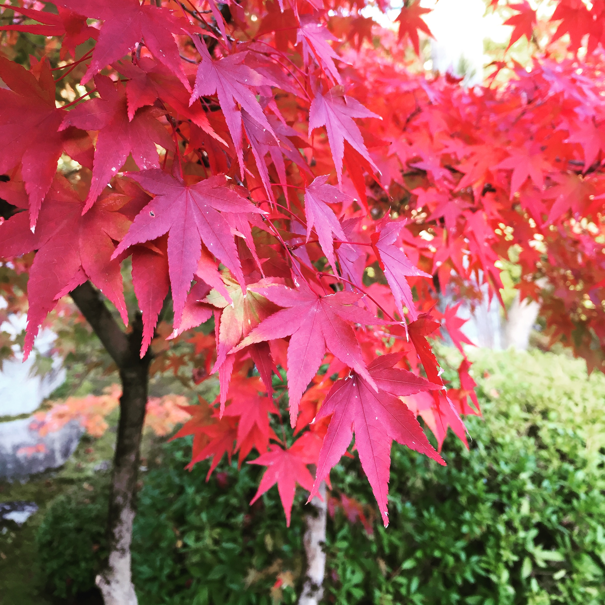

ABOUT

現職では、主にWebデザイナーとしていますが、将来的にはフロントエンドエンジニアや、Webエンジニアとしてキャリアを積もうと思い、日々Webに関しての知識を習得することに取り組んでいます。
Introduction
はじめまして。
ご覧いただきありがとうございます。
”コウ” と申します。
夢を追いかけて、日本にたどり着いた20代後半の台湾人です。
好きなものは、旅行、写真、読書、コーヒーです。
- Career
元々は日本語学科でしたが、未経験としてWeb業界に入りました。現職では、主にWebデザイナーとしていますが、将来的にはフロントエンドエンジニアや、Webエンジニアとしてキャリアを積もうと思い、日々Webに関しての知識を習得することに取り組んでいます。
「デザインのセンスがあるエンジニアになりたいです。」
- My story
学生時代から日本文化に興味があり、大学では日本語を専攻することにしました。京都が好きで、ずっと京都に住んでみたかったです。
大学卒業後、ワーキングホリデーを利用し、夢をかなえて京都に来ました。
温泉旅館とホステルで働いたことがあります。様々な人と出会えて視野が広くなって楽しい一年を過ごしました。これによって、日本語能力だけでなく人生の経験も積んで、とても成長したと感じました。
台湾に帰ったら、Web領域に興味をもって、頑張って学校を通いそれに関する知識を身に着けました。
就職する際に今の自分はもっと日本で何かをできるのかなと思って就職活動を行い、また日本に戻りました。
- More about me
母国語は中国語でありながら、自分の視野を広げるために、日本語と英語などの語学力を身に着けることに努力しています。それによって違う視点からものを考えることができました。性格は、チャレンジ精神で、これまで新しい分野に挑戦して参りました。
周りの人からは、優しい、素直、真面目などと言われたことがあります。
自分がこれまで積み上げた能力とスキルを活用して、且つ外国人としての特徴を使って活躍できるところで頑張れたらと思います。
What work I have done
- ・Javascript、jqueryを使って画面の動きの作成
- ・レスポンシブに対応したWebサイト制作
- ・SCSS、Bootstrapを使ってのコーディング
- ・Wordpressでのサイト制作
- ・Adobe XDを使ってプロトの作成
- ・Photoshop、illustratorなどでリーフレットの作成